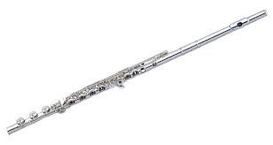

The term "flute" primarily refers to a family of musical wind instruments that produce sound by directing air across an opening, causing a column of air to vibrate. Musicians who play the flute can be called flutists or flautists. Woodwind Family: Although traditionally made of wood, many modern flutes are now constructed from metal (silver, gold, platinum, or nickel alloys). Sound Production: Sound is created by blowing across an opening in the side of a tubular instrument. Transverse Flute: The term "flute" often specifically refers to the transverse flute of Western music, which is held sideways. Types: The most common type is the concert flute, pitched in C. Other common sizes include the smaller piccolo (plays an octave higher) and the larger alto flute (pitched a fourth lower) and bass flute (pitched an octave lower). There are also even larger and lower-pitched flutes like the contrabass flute and hyperbass flute. Construction: The modern concert flute typically consists of a head joint, body joint, and foot joint, with a key mechanism covering tone holes. Ancient Origins: Flutes are among the oldest known musical instruments, with bone flutes dating back over 40,000 years. They have been found in various cultures around the world. Evolution in Europe: The transverse flute emerged in Europe and evolved through the Renaissance and Baroque periods. The addition of keys in the late 17th century led to improved playing capabilities. Theobald Boehm's Contribution: Theobald Boehm's innovations in the 19th century, including a new key system and cylindrical bore, revolutionized the instrument and led to the modern flute design. Breathing Technique: Requires proper breath support, typically from the diaphragm, to sustain notes and control airflow. Embouchure: The way the lips are shaped and used to direct the air stream across the tone hole. Finger Technique: Fingers cover keys or tone holes to produce different notes.
